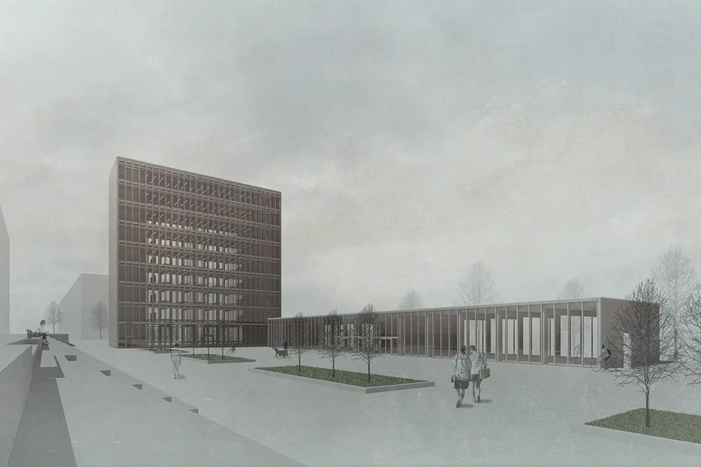
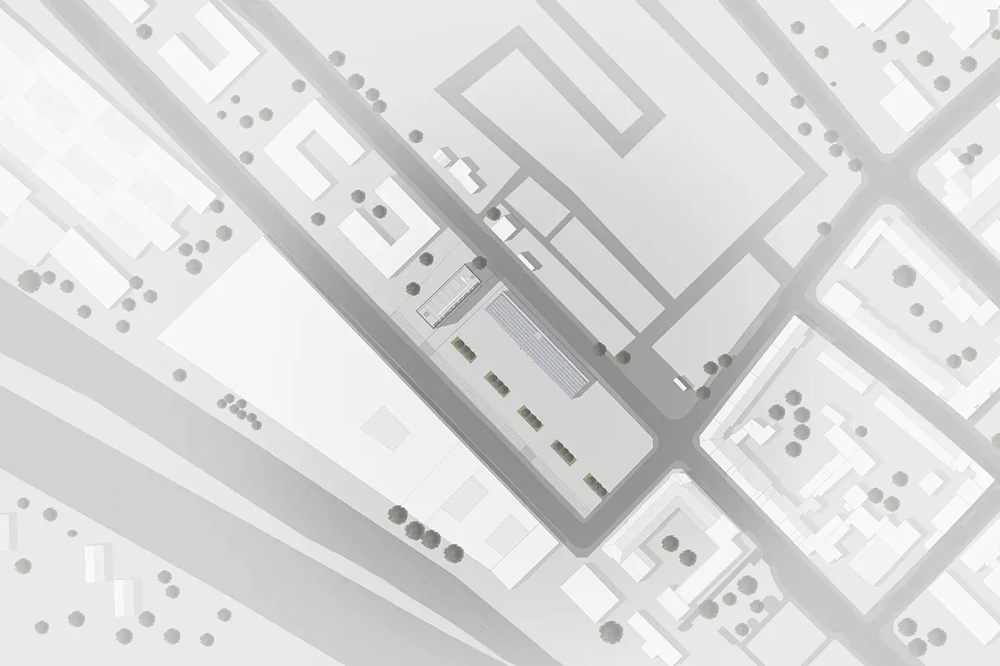

Coursework - RWTH Aachen University 2018
Team: Lazar Karpachev, Rusi Petkov, Roland Reinartz, Laura Schneider, Kristina Tomova
Supervisor: Univ.-Prof. Dr.-Ing. Martin Trautz
ArchitectureThe Architectural Research Incubator combines workspace for students of the Faculty of Architecture at RWTH Aachen with public exhibition space. To perfectly implement the room schedule, we created a compact high building for the workplaces and an elongated, representative building for exhibitions. In both typologies, the social interaction space is in the foreground, so all floors are occupied by one single main room. In the tall house, this room is flanked by two cores which have a stiffening effect. Structurally, it is a timber frame construction. In conjunction with the cores made from glued laminated timber, a pure wooden construction is created.
The structural use of wooden elements is made possible by using full-thread screws. These provide a reinforcement for the highly stressed glulam cross sections. Of course, fire protection is of particular importance to this timber construction. This is ensured by a burnup impact on the wood cross sections and by cladding the cores. The facade of the skyscraper is constructed as a double facade. This is done entirely in glass to provide the students with optimal light conditions during their work. The interspace of the double facade acts as a thermal buffer zone in summer and winter, it also allows a natural fresh air supply through a chimney effect. Therefore the tall house can do without a ventilation system.